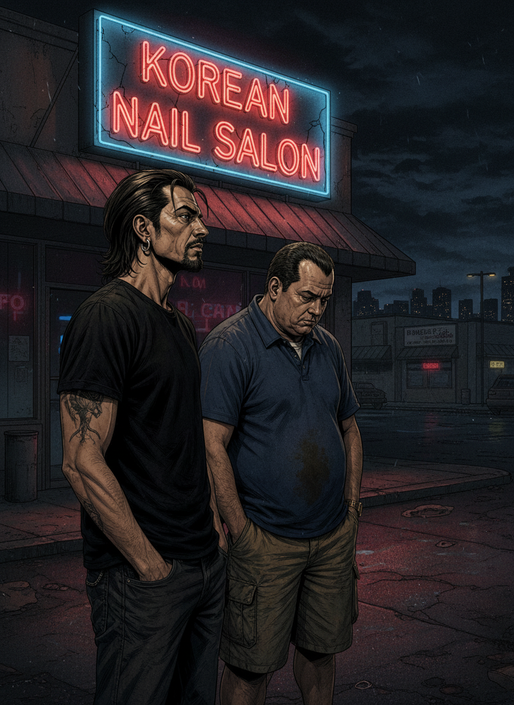

Escena 1 — Mejor llama a Saul

TONI
"Rulo. ¿Esto es la precuela de Breaking Bad? ¿El abogado de los trajes de colores tiene su propia serie?"
RULO
"Better Call Saul. Seis temporadas. Y vas a acabar queriendo a Jimmy McGill más de lo que jamás quisiste a Walter White. — Imposible. — Ya."
Albuquerque. El parking de un strip mall.
Escena 2 — Jimmy McGill

TONI
"¿Este es el protagonista? ¿El del traje de los domingos que no llega a lunes?"
RULO
"Jimmy McGill. Hermano del mejor jurista de Nuevo México. Que no le quiere, porque Jimmy siempre busca el atajo. ¿Tiene razón? Esa es la pregunta de toda la serie."
Escena 3 — La trastienda

TONI
"Vive en la trastienda de una manicura."
RULO
"Y va a salir de ahí. Cada decisión que toma para salir le aleja un poco más de quien podría haber sido. — Como Walter White. — Mejor escrito que Walter White."
MEJOR LLAMA A SAUL
505-503-4455
Escena 4 — Mike Ehrmantraut

TONI
"Mike. El mismo de Breaking Bad."
RULO
"Aquí te cuentan de dónde viene. Jonathan Banks tiene un monólogo en la temporada 2 que te deja sin respiración cinco minutos. Sin música. Solo él hablando. — Madre mía."
Escena 5 — Gus y el imperio

TONI
"Gus Fring. También el mismo. ¿Y Lalo? ¿Quién es Lalo Salamanca?"
RULO
"Aquí Gus es más peligroso: construye el imperio antes de que exista, con la paciencia de quien puede esperar años. Y Lalo... el mejor villano de este universo. Y eso incluye a Gus."
Escena 6 — Kim Wexler

TONI
"Rhea Seehorn. Kim Wexler. ¿Por qué todo el mundo habla de ella?"
RULO
"Es el personaje más inesperado. No estaba en Breaking Bad. La inventaron para esta historia y se quedó con todo. Cuando llegues a la temporada 4 vas a entender por qué todo el mundo la llora."
Escena 7 — Lalo Salamanca

TONI
"Lalo me da más miedo que Gus."
RULO
"Gus da miedo porque es frío, sabes lo que va a hacer. Lalo disfruta. Eso es infinitamente peor. No puedes predecir a alguien que disfruta. Tony Dalton. El gran descubrimiento."
"No es una precuela.
Es una tragedia griega
con traje amarillo."
— Rulo · sobre Better Call Saul
Escena 8 — Gene, en blanco y negro

Omaha, Nebraska. El futuro. En blanco y negro.
TONI
"Espera. ¿Esto es en blanco y negro? ¿O sea que ya sabemos cómo acaba?"
RULO
"Sabemos dónde está. No cómo llegó. Ni si sale de ahí. — Eso es muy cruel. — Eso es muy bueno."
Escena 9 — La temporada 6

TONI
"Llevo cuatro temporadas. ¿Cuándo se pone buena de verdad?"
RULO
"Ya está buena desde la primera. La 5 y la 6 son de otro planeta. El final de la temporada 6 es mejor que el de Breaking Bad. — Eso no puede ser. — Míralo y me cuentas."
S'ALL GOOD, MAN
Saul Goodman
Escena 10 — Adiós Jimmy

TONI
"¿Cuándo se convierte en Saul Goodman de verdad?"
RULO
"Hay una decisión. Y después de esa decisión Jimmy McGill desaparece. — ¿Y se puede volver? — Esa es la pregunta del final. Y la respuesta es perfecta."
Escena 11 — ¿Supera a Breaking Bad?

TONI
"¿Supera a Breaking Bad? ¿Se acerca?"
RULO
"No. La temporada 6 la iguala. Y en honestidad emocional la supera. — ¿Cómo es posible que una precuela sea tan buena? — Porque no es una precuela. Es una tragedia griega con traje amarillo."
Escena 12 — El remate

TONI
"Jimmy McGill o Saul Goodman."
RULO
"Jimmy McGill. Siempre. Eso es lo que hace tan triste todo esto."
TONI
"¿Y Kim?"
Rulo no contestó. La precuela que nadie esperaba. El final que nadie olvidará. 9,0.
⭐ Veredicto de Rulo y Toni ⭐
9.0
TRAGEDIA EN TRAJE AMARILLO
Debería haber sido un spin-off de relleno. Salió siendo una de las mejores series de la historia. La tragedia de Jimmy McGill es más honesta que la de Walter White porque Jimmy sabe exactamente lo que pierde con cada decisión. Y las toma igual. Kim Wexler es el mejor personaje nuevo de la televisión de la última década. Me dijeron precuela del abogado gracioso. Me encontré con una tragedia griega con traje amarillo.